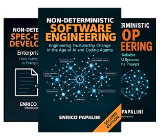

V03
Non-Deterministic Spec-Driven Development — Enterprise / second edition
Published book metadata and the corresponding chapter or file records. Volume IDs preserve the atlas history.

V03 · Earlier volume
Non-Deterministic Spec-Driven Development
Enterprise Edition -- From Public Frameworks to Enterprise Practice
This volume is part of the earlier-book collection. Its chapter and file records remain available below.
Earlier Non-Deterministic books 36
- B047 — Introduzioni alle parti — SDD, seconda edizione
Enrico Papalini · - B048 — Preface
Enrico Papalini · - B049 — The Shift
Enrico Papalini · - B050 — The Process: Four Phases, Four Gates
Enrico Papalini · - B051 — Anatomy of an AI SDD Framework
Enrico Papalini · - B052 — The Ecosystem: A Map of Public Frameworks
Enrico Papalini · - B053 — The Lightweight Protocols: GSD v1 and GSD-2
Enrico Papalini · - B054 — The Specification Toolkits: Spec Kit and OpenSpec (openspec.dev)
Enrico Papalini · - B055 — The Agentic Orchestrators: BMAD Method and AI-RPI Protocol
Enrico Papalini · - B056 — Autonomous Loops and Behavioral Foundations
Enrico Papalini · - B057 — The Comparison: Patterns, Divergences, and Convergences
Enrico Papalini · - B058 — Design Boundaries: What to Adopt, What to Avoid
Enrico Papalini · - B059 — Constitution and Architecture: The Framework Foundation
Enrico Papalini · - B060 — The Agent Pipeline and Gates
Enrico Papalini · - B061 — Automation and Extensibility: CLI, Modules, and MCP
Enrico Papalini · - B062 — Autonomous Execution: Modes, Budgets, and Governance
Enrico Papalini · - B063 — Advanced Patterns: From Frameworks to Practice
Enrico Papalini · - B064 — Limitations and Professional Judgment
Enrico Papalini · - B065 — How to Design a New Framework
Enrico Papalini · - B066 — Installation and Setup
Enrico Papalini · - B067 — Playbooks
Enrico Papalini · - B068 — Template Reference
Enrico Papalini · - B069 — Framework Reference Cards
Enrico Papalini · - B070 — Enterprise SDD
Enrico Papalini · - B071 — Spec Kit
Enrico Papalini · - B072 — OpenSpec (openspec.dev)
Enrico Papalini · - B073 — BMAD Method
Enrico Papalini · - B074 — AI-RPI Protocol
Enrico Papalini · - B075 — ralph-copilot
Enrico Papalini · - B076 — Spec Loop Engine
Enrico Papalini · - B077 — GSD v1
Enrico Papalini · - B078 — GSD-2
Enrico Papalini · - B079 — Karpathy-Inspired Skills
Enrico Papalini · - B080 — Agent Skills
Enrico Papalini · - B081 — AIDD
Enrico Papalini · - B082 — Previous Books and Author
Enrico Papalini ·